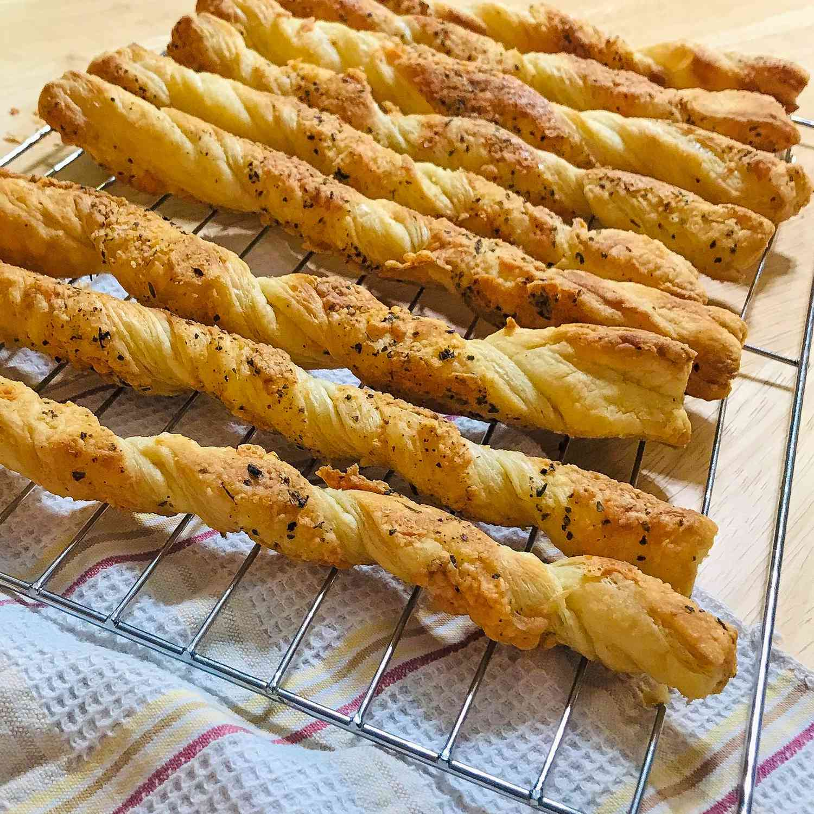

Cheese Sticks

Description
These super-simple breadsticks are easy, cheesy, and there's no dough
to make because we're going to use frozen puff pastry for this.
They're very cool for entertaining.
Ingredients
- 1/2 package frozen puff pastry
- 2 teaspoons olive oil (preferably drained from tin of anchovies)
- 1 pinch salt and freshly ground black pepper to taste
- 1 pinch cayenne pepper, or to taste
- 1/4 cup shredded sharp white Chedder cheese
- 5 tablespoons freshly shredded Parmigiano-Reggiano cheese
Steps
- Preheat oven to 400 degrees F.
- Unfold dough dough into a flat sheet and brush with olive oil.
- Sprinkle cheeses onto the dough, covering the surface.
- Cut the dough down the seam lines into 9 pieces.
- Twist the dough strip from both ends 8 or 9 times.
- Sprinkle reamining cheese over the sticks.
- Bake in the preheated oven for about 20-30 minutes, with a flip.